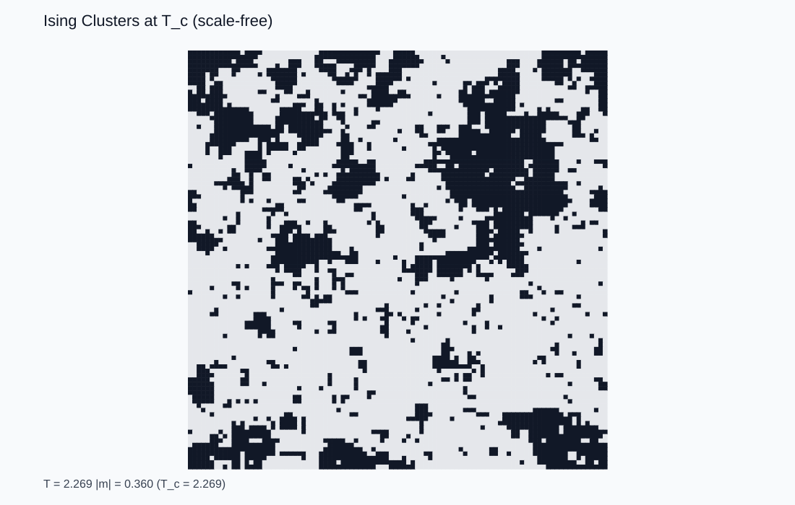
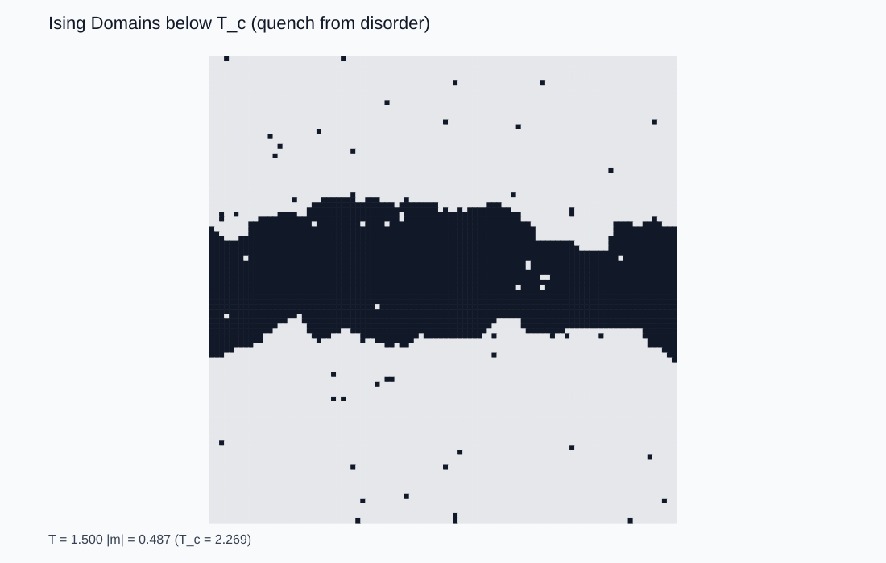
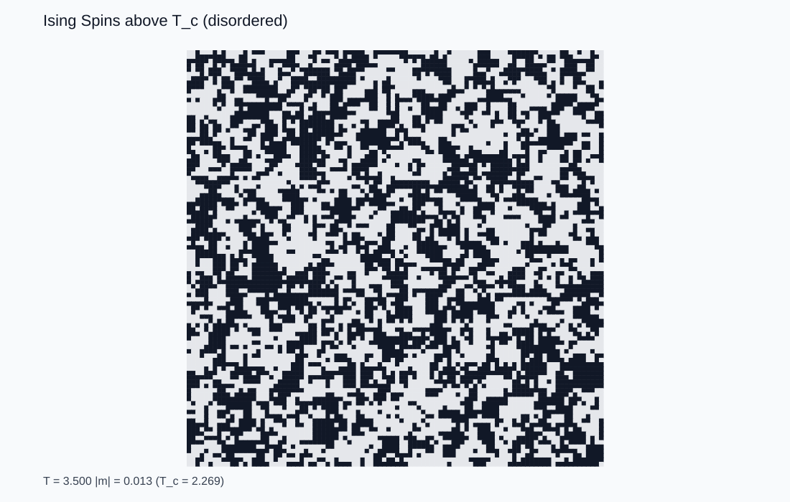
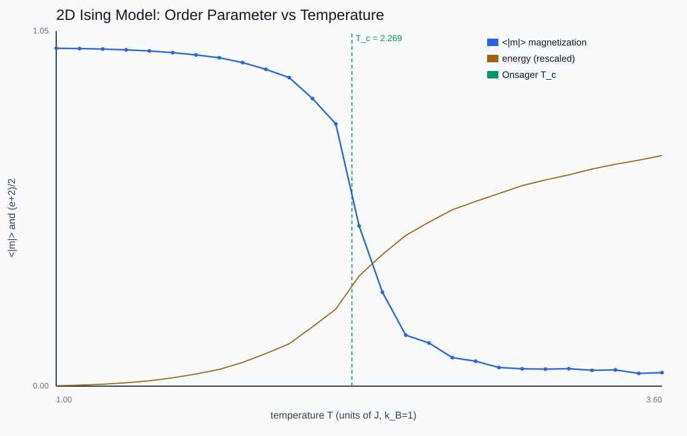
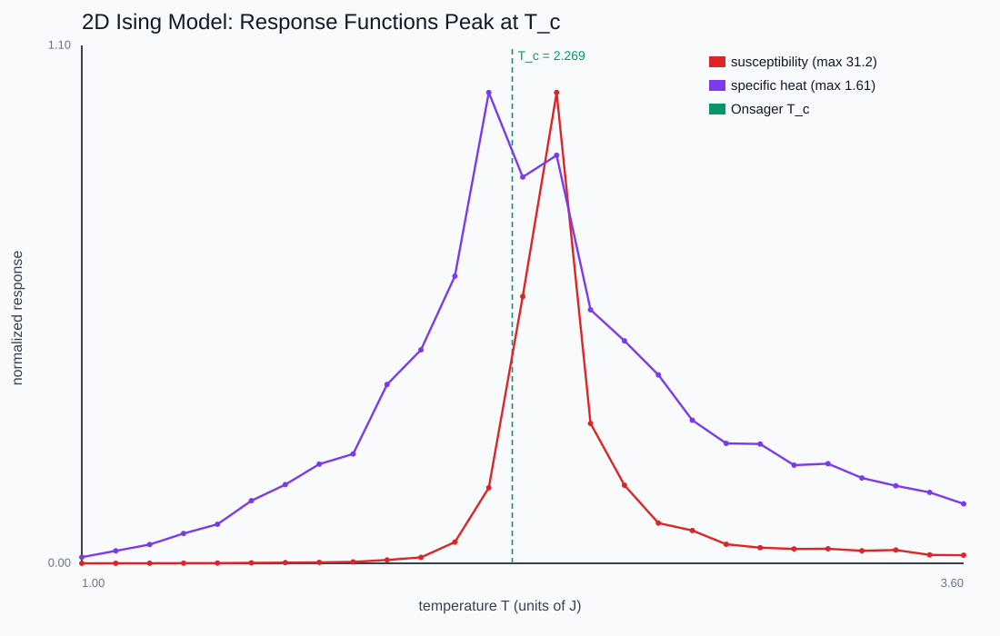

The Ising Model
Can a phase transition emerge from a trivially simple rule, and how do you simulate a system at temperature T when you can't enumerate its 2^N states?
Drag the temperature through the critical point T_c ≈ 2.269 J and watch the lattice live. Cold: large ordered domains. Hot: salt-and-pepper noise. At T_c: clusters of every size at once.

Neighbors prefer to agree
A square lattice of spins s = ±1 with energy E = -J Σ sᵢsⱼ. Aligned neighbors lower the energy. That is the entire microscopic rule — and yet it produces a sharp, qualitative change in collective behavior at a critical temperature, exactly like a magnet losing its magnetism.

Never compute Z
The partition function has 2^N terms, so direct evaluation is hopeless. The Metropolis algorithm samples the Boltzmann distribution anyway, using only energy differences: flip a spin if it lowers the energy, otherwise accept with probability exp(-ΔE/T). After enough sweeps the configurations are drawn from the correct thermal ensemble — the central trick of computational statistical mechanics.

The transition and its fingerprints
Sweep temperature and the magnetization holds near 1, then collapses through T_c = 2J/ln(1+√2) ≈ 2.269 — Onsager's exact result, reproduced on a 48×48 grid. The sharper fingerprints are the fluctuations: susceptibility and specific heat both peak at T_c, because the system poised between order and disorder responds enormously to tiny perturbations.


This chapter is drawn from the physics-lab study notes and renders. The longer write-ups and project essays live on the blog.